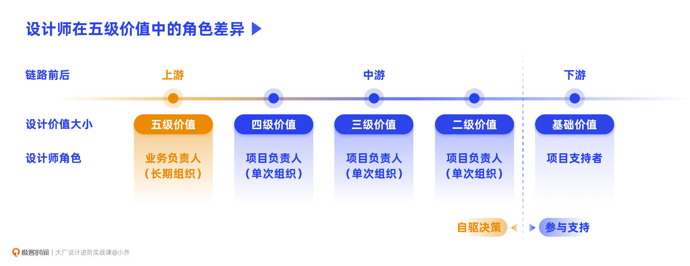
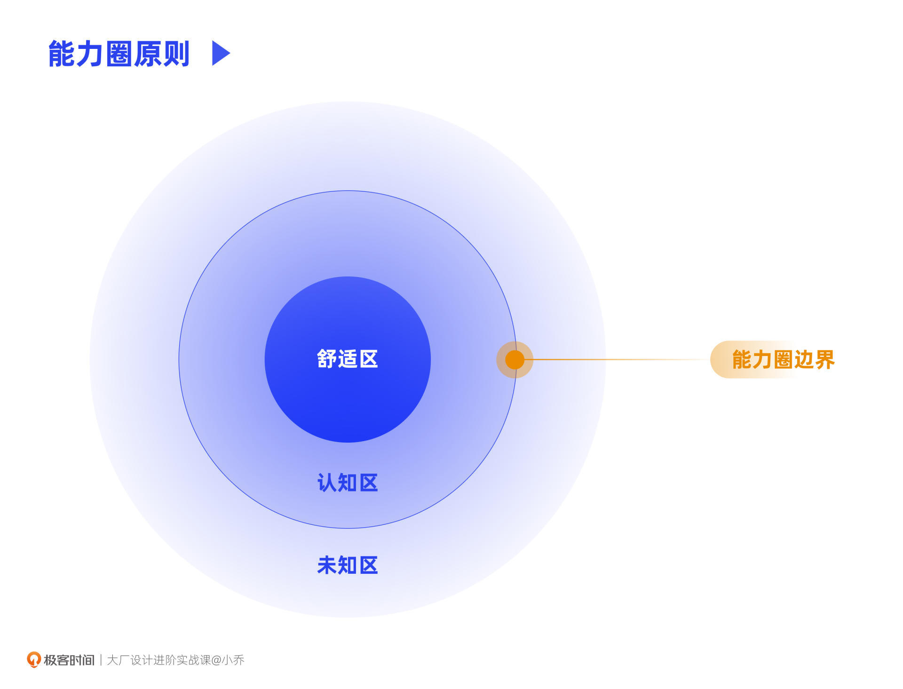
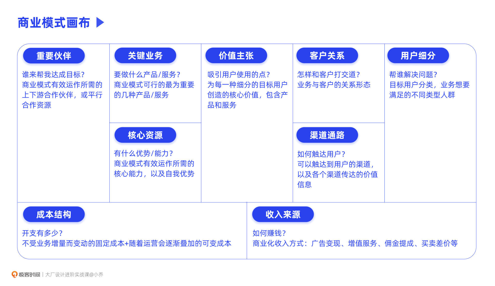
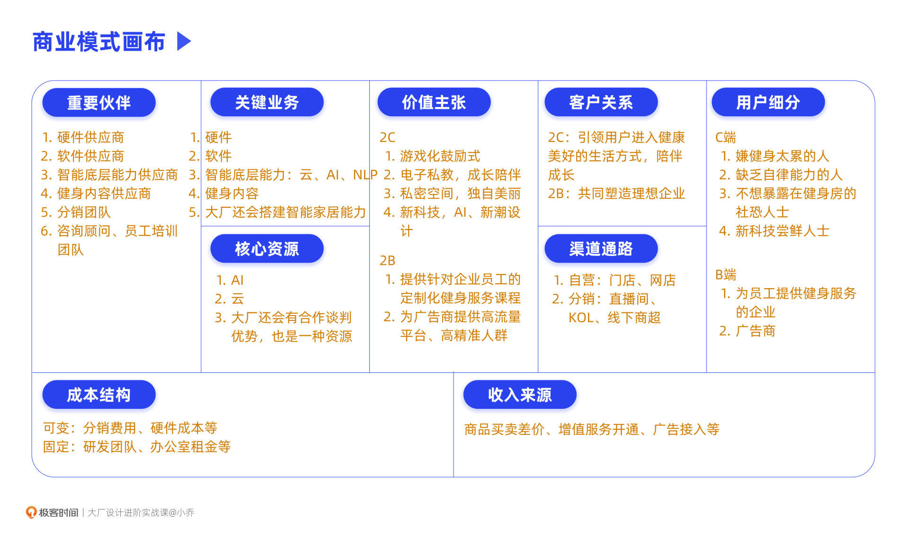

- 00 开篇词 升维思考，是设计师有效成长的第一步.md.html
- 01 业务周期：0-1-10-100-N的发展策略.md.html
- 02 商战模式：如何在商业竞争下突出重围？.md.html
- 03 市场洞察：如何找寻差异化撬动支点？.md.html
- 04 用户洞察：不懂用研的设计师不是好职场人.md.html
- 05 用户画像：是形式主义还是真的有效？.md.html
- 06 用户旅程：挖掘不同用户的核心机会点.md.html
- 07 职场晋升：看懂晋升的“游戏规则”.md.html
- 08 设计价值升级：五层进阶突破成长.md.html
- 09 基础价值 核心三原力：如何将需求转化为设计稿？.md.html
- 10 基础价值 第一性原理：从问题本质解决问题.md.html
- 11 基础价值 设计复盘：只是量化设计结果吗？.md.html
- 12 二级价值 负向网兜：如何全面发现负向问题？.md.html
- 13 二级价值 设计自驱：如何做好项目Owner？.md.html
- 14 二级价值 自驱合作：如何反内卷处理合作关系？.md.html
- 15 三级价值 增长误区：思维惯性陷阱和虚荣数据.md.html
- 16 三级价值 用户增长历程：AARRR是万能的吗？.md.html
- 17 三级价值 产品增长：如何做好产品创新？.md.html
- 18 三级价值 运营增长：如何自驱营销活动和投放？.md.html
- 19 三级价值 品牌增长 抢占心智，赢得人心红利.md.html
- 20 三级价值 增长实操：如何“步步为营”推动落地？.md.html
- 21 四级价值 L型赋能：让T型人才发挥更大价值.md.html
- 22 四级价值 “网状对比”解决共性痛点.md.html
- 23 五级价值 商业画布：设计师可以担任业务方吗？.md.html
- 24 五级价值 共创洞察：如何做好一次完善的workshop？.md.html
- 25 五级价值 领导力觉醒：写给新晋管理者.md.html
- 26 工作选择（上）：2B or 2C设计师？如何规划领域？.md.html
- 27 工作选择（下）：大厂 or 小厂？如何选择赛道？.md.html
- 28 人才地图：认知自我，成为高潜力人才.md.html
- 29 成长历程：如何从设计小白成长为团队负责人？.md.html
- 30 冰山模型：如何成为让面试官欣赏的“面霸”？.md.html
- 31 作品集指导：什么是面试官喜欢的作品集？.md.html
- 用户故事 什么是职场设计师进阶的正确姿势？.md.html
- 结束语 突破自我，成人达己.md.html
- 捐赠
23 五级价值 商业画布：设计师可以担任业务方吗？
你好，我是小乔。
首先恭喜你，已经完成了前面四级设计价值课程的学习，如果可以充分掌握并实践成功，就已经是互联网设计师中的佼佼者了。在全国范围内，是排得上前20%的头部设计人才。从这节课开始，我们就要踏上五级价值的阶梯了。
我们先简单回顾一下前面的4个价值阶段：
基础价值：是我们设计师的基础工作，不管处于哪个职级，支持好业务的设计需求，都是公司对我们的地板要求。
二级价值：根据数据和用户调研找出负向体验，提升决策能力，自驱优化项目并带动正向数据。
三级价值：需要我们具备更强的业务视角，洞察增长的差异化爆破点，自驱推动业务增长。
四级价值：垂直击穿独立业务，再横向找寻相似业务的共性痛点，L型赋能实现降本增效。
随着产出的设计价值不断提升，我们也在不断成长，超越原本职级的能力要求。而“超出预期”的表现会为我们带来高绩效、晋升、奖金等回报。因此，当我们提升自我竞争力，晋升、涨薪只是成长路上顺其自然的事情。
接下来，我们来聊聊，当成长到五级价值阶段时，我们应该具备怎样的能力，设计师的天花板又在哪里呢？
五级价值是什么？
实现五级价值，简单来说就是设计师成为业务负责人，而不再只是支持角色或负责设计项目的角色。
我们会发现，从基础价值，一步步升级到五级价值，设计师的角色在不断前置。基础价值阶段，设计师处于链路的最下游，和开发一起承接支持工作，使设计稿满足业务需求；从二级到四级价值，设计师自驱项目，设计职能前置，纵向带来业务增长，横向带来降本增效；而五级价值，则需要站在业务的最前沿，成为虚线或实线组织的负责人，带领业务。

也许有同学会问，五级价值是P9、P10干的事吧？我还只是个小虾米，需要考虑五级价值吗？其实，业务规模有大有小，可以根据自己的能力来胜任。举例来说，创业做拼多多、今日头条，是一种业务；在抖音里做一个本地生活模块或社交模块，也是一种业务；如果公司在迅速发展阶段，为了降本提效，独立整合中台部门，这也是一种业务。不管规模大小，都值得尊敬。
也许你会问，设计只是个支持类的职能吧，设计师也能当业务方吗？其实，不管是国内还是海外，设计师成为业务方的案例比比皆是。
我们在五级进阶课程中讲过，苹果的前首席执行官Steve Jobs、Airbnb的首席执行官Brian Chesky、YouTube的联合创始人Chad Hurley、Behance的联合创始人Matias Corea，他们都是设计师，都是改变行业的存在。
我任职过的企业中，也有许多核心业务的负责人并不是产品经理或者运营，有技术，有战略，也有许多业务负责人是设计师，甚至有财务成为了业务负责人。我也有幸负责过两次业务，虽然规模不大，但对我来说是职业生涯中进步最快的一段时光，获得了肌肉撕裂式的成长，也让我产生了对于创业的浓厚兴趣。
许多同学抱怨设计话语权不高，但你有没有想过，我们可是什么项目都能参与的职能。只要你自己愿意前置角色，你知道的信息和积累的项目经验就是最多的。不要被每天画不完的图禁锢了认知，而将自己始终置于最末端的角色。也许有同学会说，我每天接需求很忙啊。但忙碌和没时间都不是借口，我有很多同事和朋友，每个工作日都忙碌到半夜，但依然会找时间学习新知识，并把它们运用在职场中，不断沉淀自己。
认知和信息差是我们打破设计天花板的前提。在晋升道路上，大家会发现，一些高级别的产品和运营，到最后好像不太区分了，那是因为产品职能和运营职能到后期的上升通道是相同的。同理，设计也是一样。
因此，设计总监并不是设计师的天花板。在成为中层管理者之后，Title其实也不能说明什么，因为在小公司是设计总监，在大企业可能只是专家级别。最重要的还是看能力本身，将负责的事情从设计支持、设计项目，提升到更上层的完整业务。
但这并不是一个容易的过程。对于设计师来说，除了本身必须具备的设计专业、商业洞察和用户理解，还需要具备组织搭建和商业规划能力。从阿里淘系诞生的“鲁班”就是一个典型的设计师担任业务方的项目，负责人是设计师，团队内除了设计，还有产品经理、运营、技术等职能同学。最终鲁班与阿里云整合为“鹿班”，形成了商业化生态，改变了行业，初步诞生了智能中台的模式。
我们这节课的目的，并不是为了让大家创业，或一定要让你成为业务负责人，而是重在建立上层思维。通过升维认知，打破视野，站在更高维度审视设计这个职能，具备和上层交流的能力，才能降维做好我们的日常工作。具备上层思维，也有助于我们制定职业上升规划，获得超出他人的成长速度。
能力圈原则决定天花板
为什么升维认知可以让我们成长更快呢？我们先来看一个概念，叫作“能力圈原则”。
巴菲特认为投资成功最重要的是“能力圈原则”，他说：“如果你知道自己能力圈的边界所在，你将比那些能力圈比你更大却不知道边界所在的人富有。”查理芒格说：“如果你不清楚自己能力圈的界限在哪里，就不算有能力。”总结而言，就是清楚、正确地了解自己有多大能力。同样，这也适用于我们的生活和工作。
我们有优势且实现过一些成功案例的区域，就是“舒适区”；超越优势但我们有一定认知的区域，就是“认知区”，认知区的边界就是“能力圈边界”；再向外，就是“未知区”，如同那句老话所说——人们无法赚到认知以外的钱，这也是为什么我们都需要不断延伸自我认知，因为只有这样，能力边界才会无限扩大。

如果你想试试自己的能力边界，或者你恰好有一颗蠢蠢欲动的创业之心，不如提前做好准备，等待时运到来时主动争取机会。并且，在企业内部创业，是一种既能锻炼自己又较为安全的方式，可以借助大厂的资源，又能有效锻炼我们的能力。
比如，假设我们是字节跳动的员工，我们想做个海外音乐产品，那就可以背靠TikTok的打歌能力和字节强大的推荐技术，以及雄厚的推广资金。
在了解了五级价值是什么之后，我们来看看成为业务方需要掌握的基础知识，帮助我们更快确认业务的可行性与价值。
我们该如何规划业务？
作为企业内的业务负责人，赛道并不一定是自己选择的，通常会由战略部和总裁办给出，并把任务交付于能力可信的人，任命为业务负责人。当然，也有许多业务是负责人自己发现并向上提出的，从而自驱完成立项。
赛道选择的相关方法在我们之前的课程中讲述过，今天我们来重点探讨“商业模式画布”。也许你现在并不是业务负责人，但想要与高管交流，向上链接，或者你想脱离企业，自己创业，无论是开个咖啡店、成立自媒体工作室，或是创立个人IP品牌等，商业画布都是帮助你梳理业务闭环的利器。
商业模式画布是什么？
这是乔布斯推荐过的工具，他称商业模式画布为“上帝视角”。商业模式画布由9大模块组成，在下图中，我用容易理解的语言为你描述了每个模块的具体意思。乍一看，9个模块是不是让人很头大？但其实很容易理解。

我们先将目光聚焦在中间的“价值主张”，价值主张就是吸引用户使用我们产品或服务的核心价值。因为价值足够明确和强烈，用户才选择了我们，而不选择其他竞品。比如宜家的价值主张是所有家居用品的“一站式”采购，非常方便，且设计审美和价格方面对大部分平民百姓来说都较为理想，具备强大的普适性。
“价值主张”的右侧是与用户相关的内容，用户一共有哪些类型，这个又会关系到我们曾经讲过的用户画像，而价值主张就是我们为这些用户们提供的核心产品和服务，通过线上、线下等多元渠道触达用户，与用户建立关系。
“价值主张”的左侧就是我们的能力。比如，我们为了提供这样的价值主张，需要哪些关键业务，我们有什么核心资源和优势，又可以与哪些重要伙伴合作共赢。
最下方，就是成本和收入。这两块可千万不要画反，是与上方的模块相对应的，左侧的资源能力涉及到整体的开支成本，而右侧的用户提供我们相关的收入。
这么一拆分，是不是觉得很好理解了呢？
为什么需要梳理商业模式画布呢？是每位创业者或者咨询公司，都必须为业务梳理商业画布吗？并不是，这只是一个工具，关键在于思维本身，而不是工具表层。就像我们用PS、Sketch、Figma作为画图工具一样，核心在于本身的设计思维理念和手活技法优秀，用什么工具都能画出优秀的设计稿。
而商业模式画布，是最方便的帮助我们全面梳理业务闭环的工具，让我们不会顾此失彼，陷于偏执中。举个小例子，许多设计师都会跟风做设计公众号，做自媒体账号，以为这样就可以像一些知识博主那样，赚得盆满钵满了。但其实，许多人并没有想清楚闭环路径，具体针对哪些细分用户，需要具备哪些能力资源，成本支出是怎样的结构，如何盈利。有许多同学因为无法闭环，后知后觉发现难以坚持，因为缺少物质或精神方面的正向反馈而最终放弃。
商业模式画布怎么用？
了解了商业模式画布是什么，以及它的重要性后，我们以近一年来十分热门的智能健身镜为例，来看看具体该如何运用。

会使用智能健身镜的人群有嫌健身太累的懒人、缺乏自律能力的人、社恐人士和新科技尝鲜者，而价值主张，正是一一对应细分用户来提供的核心产品和服务。我们会发现，用户往往不会只有C端消费者，也会有B端客户，比如为员工提供健身服务的企业，或想要针对健身人群和高科技尝鲜人群投放广告的广告商。
产品和服务该如何触达到用户呢？如果有自营渠道，比如网易严选、苏宁、宜家，就可以在自家门店和网店销售。而另一类方式就是分销，通过各大直播间、KOL或线下商场超市，选取用户类型相似的渠道，进行分销。启动分销的前提是利润可覆盖成本，有些分销渠道的抽佣可能会高达营收的40%。
而关键业务中，除了软硬件、智能底层能力和健身内容外，如果我们处于大厂，还需要搭建智能家居能力，正如小米抢占家居赛道一样，扫地机器人、摄像头、电饭煲等，都是在入侵智能家居赛道。而大厂做智能健身镜，往往也不会只做一个健身镜，提倡美好生活方式的品类都可以考虑。
成本结构中，会分为可变成本和固定成本。比如生产了更多的智能健身镜，硬件成本就会增加，硬件成本就是可变成本；但软件是复用同一套，并不会因为出售了更多健身镜后就增加成本，那么软件研发成本就是固定成本。
在收入来源中，收入模式通常分为4种：
第1种，通过低价买和高价卖来获得差价，比如买手店；
第2种，通过佣金获得收益，比如美团会扣去商家的佣金，滴滴会扣去司机的佣金；
第3种，提供增值服务，比如长视频平台“爱优腾”，爱奇艺、优酷、腾讯视频都会提供会员服务，网易云音乐也会针对版权歌曲收取费用等。
第4种，广告变现，当一个平台流量较高时，就很容易通过广告做商业化变现，比如抖音、微信、百度等。
这里，给你提供一个收益计算公式：营收=客流量 X 转化率 X 客单价 X 复购率。因此想提升收入，除了思考最合适的营收模式外，也需要提升公式中的4个关键变量，这是互联网大厂常用的商业化目标拆分方式。
今日小结
今天，我们一起开启了五级设计价值的学习，从五级价值起，设计师就需要将自己置身于业务方的思考高度，升维认知，降维打击。
并非一定是要创业或者当业务负责人，才需要学习五级价值，五级价值其实是每位想快速成长的设计师都必须具备的认知和意识。通过具备业务角度的思考，突破我们的能力圈边界，帮助我们和上层管理者平等有效地交流，更准确地找出设计师可以发力的项目。
通过商业模式画布，我们会更理解业务为什么要这样规划。同时，也能找出规划的漏洞和自驱机会点。需要补充的是，赛道虽然通常并不由我们决定，但当我们选择业务时，一定要选择符合国家政策和有发展趋势的行业赛道，因为业务成功与否，依赖天时地利人和，没有英雄的时代，只有时代的英雄。
下节课，我们将学习团队决策者们一起共创的Workshop方法，帮助管理者们规划业务路径，也帮助年轻设计师们理解业务方向背后的推导原因。
互动时刻
回顾你过往的工作经历，是否曾几何时想过开个咖啡店、开个画室或做个自媒体博主呢？你现在对这些想法的态度和规划是怎样的呢？在过往公司里，是否遇到过设计师担任业务方呢？
欢迎把你的经历和思考在留言区分享出来，与我和其他同学一起探讨。我们建了一个读者交流群，欢迎你的加入！如果你觉得有所收获，也欢迎把文章分享给你的朋友一起学习。我们下节课见。
© 2019 - 2023 Liangliang Lee. Powered by gin and hexo-theme-book.